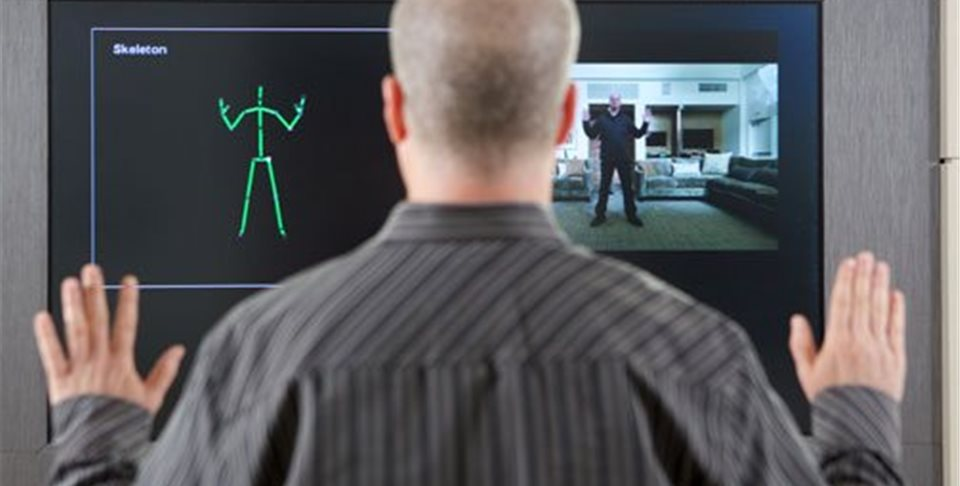

Estudios acerca de la terapia basada en videojuegos
A mediados del 2006 se empezaron a realizar estudios basados en alcanzar nuevas tecnicas o vías que permitan lograr un vínculo entre terapia fisica y Videojuegos. En sus inicios se hacía uso de las plataformas desarrolladas por Sony, luego Wii y finalizando la Xbox.
Cada una de estas empresas modificó sus presentaciones implementando a sus consolas camaras de realidad virtual, en el caso de Sony, desde la PlayStation II y III con el Eye toy ; la aparicion del Wii con sus mandos de movimiento y por último la Xbox con uso de la Kinect, la cual será la cámara que utilizaremos para el desarrollo de nuestro proyecto .
Se implementaron los videojuegos a las terapias con resultados sorprendentes para la época. “se usó el EyeToy de Playstation II como complemento a la Terapia Ocupacional y Física en personas con quemaduras, incluso en estadios de recuperación iniciales, como forma de movilización incluso estando todavía encamados, y comprobaron que además ayudaba a disminuir la atención en el dolor que presentan estos pacientes.”-Revista Extremeña de Atención Temprana-ensayo de Haik y cols.
“Mejorando el estado físico de individuos con discapacidad intelectual y problemas del desarrollo a través de un programa de intervención de realidad virtual”, donde entrenaron a 60 adultos con estas características mediante la PlayStation y el EyeToy, realizando simulaciones de distinto nivel de dificultad y de requerimiento de Actividad Física. Como en los estudios anteriores, se demostró que sentían mayores niveles de bienestar y de motivación a la hora de enfrentarse a este tipo de terapias, además de mejorar su nivel de bienestar físico.
EGP permite adaptar el diseño del juego e interfaces a las necesidades específicas de los pacientes . Por ejemplo, Sajjad describen el uso de imágenes en un juego de disparos en primera persona para permitir que los pacientes con tumores cerebrales experimenten una respuesta inmune imaginaria a los tumores. En un ensayo clínico aleatorizado (ECA), los autores observaron reducciones significativas en la depresión, la ansiedad, la ira y el comportamiento perturbador y aumentos en el autoconcepto, con ventajas significativas de la intervención sobre el control en todas las áreas.
Se hace referencia a la gran adherencia que genera este tipo de tratamiento, fomentando la motivación de los usuarios que los practican
Además, puede ser usada en casa, y no tienen un coste alto
Desventajas
El empleo incontrolado de estos juegos puede causar un desorden grave en la vida de los niños y adolescentes. Se ha constatado que su uso se antepone a otras actividades como el deporte, la lectura o el contacto con los amigos. En los casos más graves, la práctica extrema de éstos lleva al jugador a huir del mundo real encerrándose en el virtual.
Sin embargo, no todo es tan negativo, puesto que en algunas especialidades se está recomendando el uso del Nintendo Wii como herramienta de rehabilitación en pacientes con diversas patologías lo que, actualmente se conoce como WiiHab o RehaWiilitación, en español, que consiste en utilizar el potencial de la consola con el objetivo de favorecer la recuperación física y funcional del paciente.